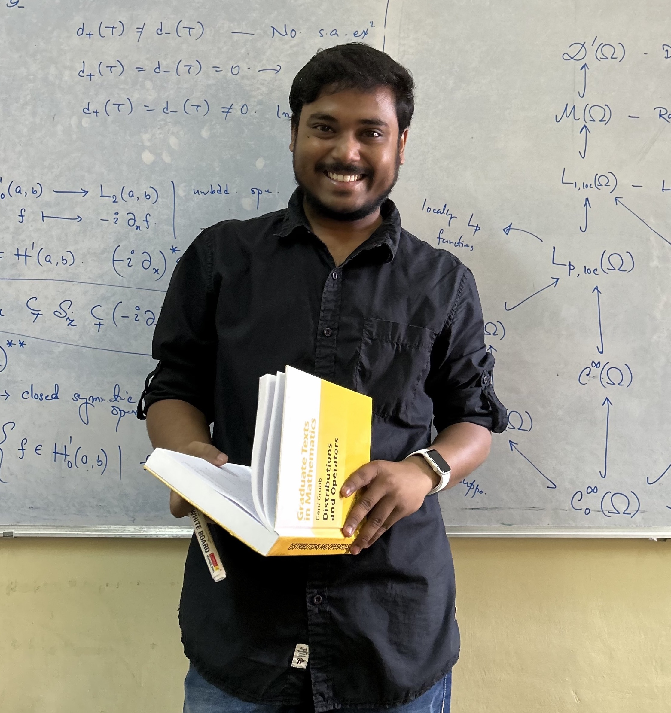

Hello, I'm
Indrajit Ghosh
Senior Research Fellow
Indian Statistical Institute
Email: rs_math1902@isibang.ac.in

Hello, I'm
Get To Know More


2+ years
Mathematics Hons.

PhD (Currently Pursuing)
MSc. in Pure Mathematics
BSc. Mathematics Hons.
Greetings! I am honored to introduce myself as a Senior Research Fellow in the Theoretical Statistics and Mathematics Unit (SMU) at the Indian Statistical Institute, Bangalore Centre. My area of interest lies broadly in the domain of Operator Algebras with a pronounced focus on von-Neumann algebras, Type \(II_1\) factors, and \(C^*\)-algebras.